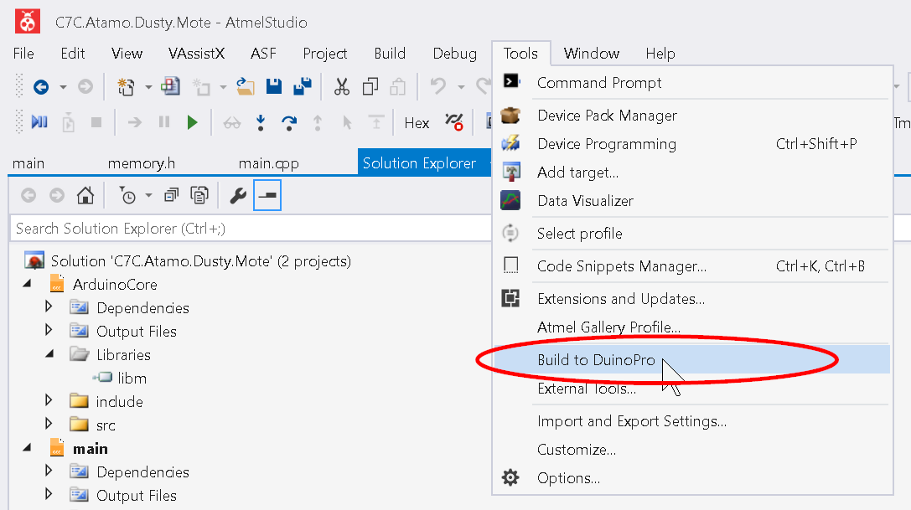

Building with Atmel Studio 7¶
To build with Atmel Studio 7 (AS7), there are 2 steps:
AVRDUDE tool¶
We will make a new External Tool in AS7 for building with
avrdude.exe
In AS7 go to the Tools menu and click External Tools as seen below

A new dialog window should pop up as below.
Fill in the following fields as follows:
- Name your new tool Build to DuinoPro (can be anything)
- Enter in the path to
avrdude.exe. This will be installation dependent, but if you are using Windows and you set everything to default, it should beC:\Program Files (x86)\Arduino\hardware\tools\avr\bin\avrdude.exe - Enter in the following line:
-C "C:\Program Files (x86)\Arduino\hardware\tools\avr\etc\avrdude.conf" -p atmega328p -c arduino -P COM4 -b 115200 -U flash:w:"$(ProjectDir)Debug\$(TargetName).hex":i
- Check the
Use Output Windowbox
- Note:
- In step 3, the path
C:\Program Files (x86)\Arduino\hardware\tools\avr\etc\avrdude.confis also installation dependent - In step 3, The
COM4parameter may change, see below
- In step 3, the path
{kind=link}
Determining your COM Port¶
For Windows, open Device Manager (Ctrl+x, m).
With the device connected you should see a Ports (COM & LPT) section. Expand
that section, and the device listed will be the COM port you use for your build parameter.

Building with the Tool¶
Once you have made your AVRDUDE tool, you can use that tool to build with AS7 when your device is connected.

Note
For administrators only: For setting up Atmel Studio 7 integration please read: